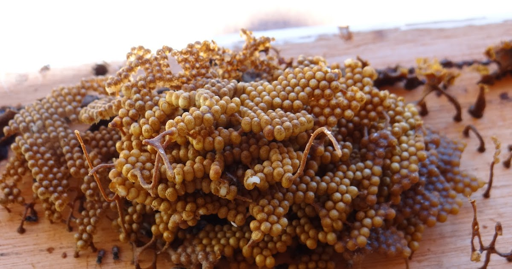

Curiosidades
Nomes Populares: A abelha Mirin-Preguiça, também é chamada de Melipona em algumas regiões e seu nome cientifico é Friesella schrottkyi.

Coméia de mirim-preguiça
Comportamento social: A abelha Mirim-Preguiça é uma espécie social, muito mansa e frágil. Recebe esse nome, porque inicia seu trabalho somente quando a temperatura se aproxima de 20ºC. Por isso, começa a trabalhar por volta das 10 da manhã e para por volta das 15-16h. É uma abelha bem pequena, um pouco maior que a Drosófila (uma espécie de mosca das frutas). Cada colônia apresenta cerca de 300 abelhas. É uma abelha muito importante na polinização de árvores. Seu voo é bastante diferenciado, pois, antes de pousar na flor, faz uma espécie de dança em zigue-zague.
Produtos: A Mirim-Preguiça produz pequenos depósitos de própolis viscoso, puro.
A mirin-preguiça não é conhecida por produzir produtos diretamente utilizados por humanos, como outros animais, mas sua presença no ecossistema e algumas interações podem resultar em produtos ou benefícios inderetos como: As fezes da preguiça são ricas em nutrientes e podem servir como fertilizante natural para o solo, beneficiando o crescimento de plantas.
O acúmulo de restos vegetais e fezes em áreas onde as preguiças habitam pode contribuir para a formação de turfa, que é utilizada em jardinagem e agricultura.
Construção do favo: O favo das Mirim-Preguiça são construidos de forma compacta e às vezes em forma de cacho dependendo do espaço disponível.
Resistência a doenças: Essas abelhas apresentam uma resistência comum a doenças.